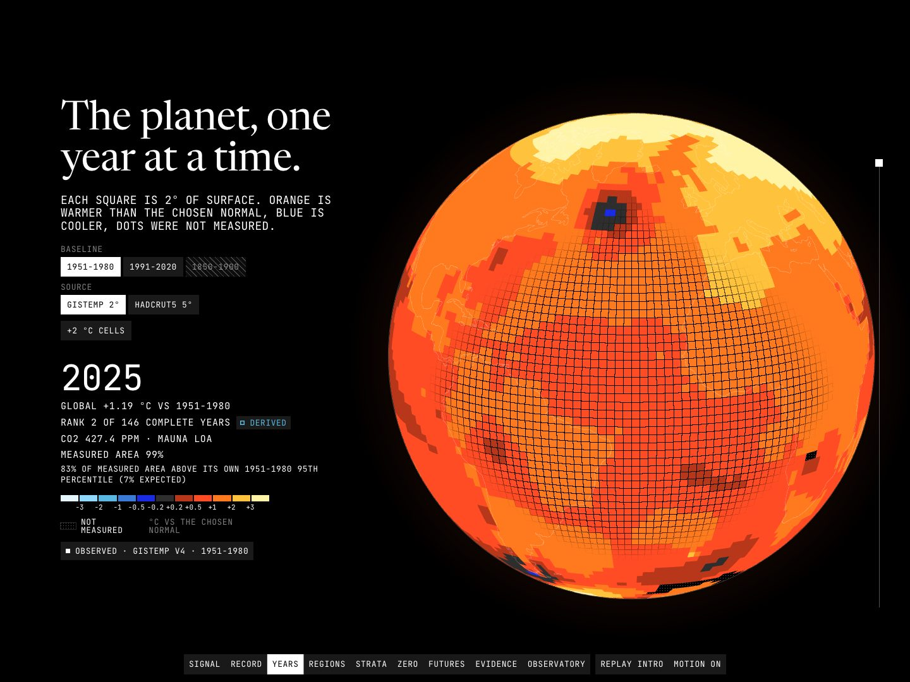

Data story · Python pipeline · WebGL · 2026-10
The Planet Is Speaking in Data
A scroll-driven look at 146 years of NASA GISTEMP and 176 years of HadCRUT5 temperature records, told through a globe that unwraps into a map and a core sample of yearly strata, with every baseline choice made visible.

Contains NASA GISS GISTEMP v4 (acknowledgment requested), Met Office HadCRUT5 5.2.0.0 (Open Government Licence v3.0), NOAA GML CO2 and Natural Earth 110m (public domain), transformed and aggregated here. IPCC AR6 values are quoted briefly with page citations; the AR6 licence page could not be verified. These are anomalies, not absolute temperatures, and the site makes no forecasts.
01 — The problem
Two famous temperature records, NASA GISTEMP and HadCRUT5, are published on different baselines (1951-1980 and 1961-1990), at different grid sizes, with different amounts of missing data. The IPCC reports warming against 1850-1900, which GISTEMP, starting in 1880, cannot support. Put side by side without care, the records appear to disagree when much of the difference is the choice of zero.
The question: how much of what we see in the record is signal, how much is baseline and coverage, and can a reader see that choice rather than take it on trust?
02 — What I built
An offline pipeline and a static site joined by a contract.
- Pipeline: checksummed ingestion of the raw files, cell counts reconciled by an independent netCDF read, explicit per-month and per-cell baseline rebasing, and a publisher that writes JSON artifacts with a JSON Schema each, plus Int8 grids at 0.1 C.
- Analytics: trends with naive, AR(1)-adjusted and HAC intervals, a cell-level trend grid, latitude bands, extremes frequency, exploratory change points, cross-source agreement and a CO2 association.
- Site: ten scenes from the signal and the record, through a year-by-year globe, regions, a core sample of strata, a choose-your-zero bench and the AR6 windows, to the evidence and a free observatory.
Every figure carries an honesty tag: OBSERVED, DERIVED, PREDICTED (IPCC, quoted), SIMULATED or SYNTHETIC.
03 — How it was built
- 01
Count what is missing before drawing anything
A second, independent netCDF read confirms the valid-cell counts. 10.86% of GISTEMP's 28,528,200 monthly 2-degree cells are missing, and 20.01% of HadCRUT5's 5,495,040 5-degree cells. Missing cells stay missing; nothing is infilled by this project.
- 02
Make the baseline an explicit choice
Each series is rebased per calendar month and each grid per cell. The 1951-1980 to 1991-2020 shift for GISTEMP is +0.611 C, a constant, tested. GISTEMP starts in 1880, so a 1850-1900 baseline is withheld for it rather than faked with 1880-1900.
- 03
Give trends honest intervals
Residuals in the 1975-2025 GISTEMP series have lag-1 autocorrelation 0.33, which widens the interval half-width from 0.020 to 0.030 C/decade. On synthetic AR(1) noise (SIMULATED), nominal 95% intervals cover the true slope 73% (naive), 93% (AR(1)-adjusted) and 83% (HAC).
- 04
Check the two records against each other
Annual GISTEMP and HadCRUT5 correlate at 0.992 over 1880 to 2025 with a root-mean-square difference of 0.052 C. Matched on the cells both observe, the difference falls to 0.043 C, so coverage explains part but not all of the gap.
- 05
Keep the browser honest
The browser rebases grids and computes zonal means itself, so those ports are tested for parity against the Python reference and a fixture. The Int8 quantization error is capped at 0.05 C and tested.
04 — Results
Data. In GISTEMP, 2025 ranks 2nd of 146 years (1.185 C above 1951-1980) and 2024 is the warmest at 1.282 C; the ten warmest years are 2015, 2016, 2017, 2018, 2019, 2020, 2022, 2023, 2024 and 2025. The 1975-2025 trend is 0.207 C/decade (AR(1) interval 0.177 to 0.236). The far north (60-90N) warmed 2.8 times as fast as the globe over 1975-2025, and all five latitude bands warmed beyond their uncertainty. HadCRUT5 rebased to 1850-1900 gives 1.12 C for 2011-2020 against the IPCC's assessed 1.09 C (0.95 to 1.20).
Checks. 80 pytest tests, 130 Vitest tests and 195 Playwright tests pass (QA ran them with one worker: 0 failed, 0 flaky). axe-core found 0 violations in 62 scans, at 1440 and 390 wide, with and without reduced motion. Lighthouse on the live GitHub Pages site, three runs: mobile performance 0.98 to 0.99, largest contentful paint 1.81 to 2.02 s, layout shift 0, accessibility 1.0, best practices 1.0; desktop performance 1.0 in two runs and 0.86 in one that hit a 309 ms blocking-time spike on a busy machine, largest contentful paint 0.41 to 0.45 s. Frame pacing on a real GPU (Apple M3 Pro, Metal): 95th-percentile frame 10.0 ms on desktop, 11.3 ms with the CPU throttled 4x, and 10.6 ms at 390 px wide with the CPU throttled 4x. That is a laptop GPU, not a phone.
Independent QA. A reviewer who did not build the site read every contact sheet and ran its own probes over four passes. It found 9 major defects in the first pass, 3 in the second and 1 in the third (among them an inspector line cut off by a wrong dash length, an observatory that painted nothing under reduced motion, and a footer at 2.5:1 contrast over the planet) and the fourth passed with none. Known limitations: two legend labels touch by 3 px at 1024 px wide with classic scrollbars, the reduced-motion static planets take about a second to paint, and the IPCC licence page could not be verified.
05 — What I'd do next
- Measure on a real phone: all frame-pacing figures here are from a laptop GPU.
- Add a third independent record once a licence that permits redistribution is available.
- Publish per-cell trend intervals, with a multiple-testing correction, instead of a significance flag only.